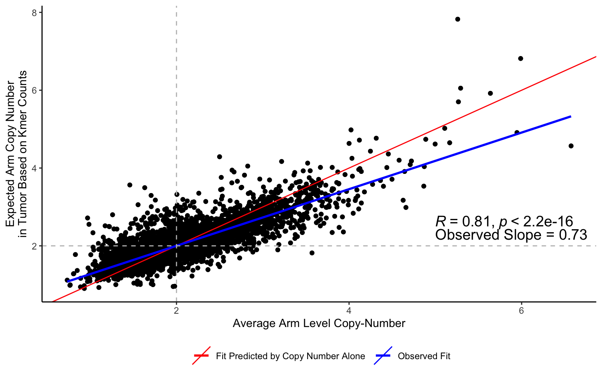

Last updated: 2023-12-24
Checks: 6 1
Knit directory: artemis_code/
This reproducible R Markdown analysis was created with workflowr (version 1.6.2). The Checks tab describes the reproducibility checks that were applied when the results were created. The Past versions tab lists the development history.
The R Markdown file has unstaged changes. To know which version of
the R Markdown file created these results, you’ll want to first commit
it to the Git repo. If you’re still working on the analysis, you can
ignore this warning. When you’re finished, you can run
wflow_publish to commit the R Markdown file and build the
HTML.
Great job! The global environment was empty. Objects defined in the global environment can affect the analysis in your R Markdown file in unknown ways. For reproduciblity it’s best to always run the code in an empty environment.
The command set.seed(20231222) was run prior to running
the code in the R Markdown file. Setting a seed ensures that any results
that rely on randomness, e.g. subsampling or permutations, are
reproducible.
Great job! Recording the operating system, R version, and package versions is critical for reproducibility.
Nice! There were no cached chunks for this analysis, so you can be confident that you successfully produced the results during this run.
Great job! Using relative paths to the files within your workflowr project makes it easier to run your code on other machines.
Great! You are using Git for version control. Tracking code development and connecting the code version to the results is critical for reproducibility.
The results in this page were generated with repository version 6069f9c. See the Past versions tab to see a history of the changes made to the R Markdown and HTML files.
Note that you need to be careful to ensure that all relevant files for
the analysis have been committed to Git prior to generating the results
(you can use wflow_publish or
wflow_git_commit). workflowr only checks the R Markdown
file, but you know if there are other scripts or data files that it
depends on. Below is the status of the Git repository when the results
were generated:
Ignored files:
Ignored: .DS_Store
Ignored: analysis/.Rhistory
Ignored: code/.DS_Store
Ignored: code/.Rhistory
Ignored: code/ARTEMIS_Pipeline/.DS_Store
Ignored: code/ARTEMIS_Pipeline/01_generate_artemis/.DS_Store
Ignored: code/ARTEMIS_Pipeline/04_artemis_pipeline/.DS_Store
Ignored: code/ARTEMIS_Pipeline/04_artemis_pipeline/counts/
Ignored: code/ARTEMIS_Pipeline/04_artemis_pipeline/read_counts/
Ignored: code/cfDNA_Models/.DS_Store
Ignored: code/cfDNA_Models/Liver_Detection/.DS_Store
Ignored: code/cfDNA_Models/Liver_Detection/Cohorts/.DS_Store
Ignored: code/cfDNA_Models/Liver_Detection/Control/.DS_Store
Ignored: code/cfDNA_Models/Lung_Detection/.DS_Store
Ignored: code/cfDNA_Models/Lung_Detection/Control/.DS_Store
Ignored: code/cfDNA_Models/Multi_Cancer_Detection/.DS_Store
Ignored: code/cfDNA_Models/Multi_Cancer_Detection/Control/.DS_Store
Ignored: code/cfDNA_Models/Multi_Cancer_TissueOfOrigin/.DS_Store
Ignored: code/cfDNA_Models/Multi_Cancer_TissueOfOrigin/Control/.DS_Store
Ignored: code/rlucas/.DS_Store
Ignored: code/rlucas/data/.DS_Store
Ignored: code/useful.stuff.aa/.DS_Store
Ignored: code/useful.stuff.aa/R/.DS_Store
Ignored: code/useful.stuff.aa/data/.DS_Store
Ignored: code/useful.stuff.aa/raw-data/
Ignored: data/.DS_Store
Ignored: data/CN_Analysis/.DS_Store
Ignored: data/Cristiano_Detection/.DS_Store
Ignored: data/Cristiano_TOO/.DS_Store
Ignored: data/Downsamples/.DS_Store
Ignored: data/Epi/.DS_Store
Ignored: data/Final_LUCAS_Ensemble/.DS_Store
Ignored: data/Final_LUCAS_Ensemble/Locked_Models/.DS_Store
Ignored: data/Final_Liver_Risk_Ensemble/.DS_Store
Ignored: data/Final_Liver_Risk_Ensemble/Results/.DS_Store
Ignored: data/GSEA/.DS_Store
Ignored: data/GSEA/KEGG_DensityKmers.GseaPreranked.1699237807444/.DS_Store
Ignored: data/GSEA/KEGG_TotalKmers.GseaPreranked.1699237843817/.DS_Store
Ignored: data/Get_Numbers/.DS_Store
Ignored: data/Kmer_Distributions/.DS_Store
Ignored: data/LINE1/.DS_Store
Ignored: data/LINE1/Downloads/.DS_Store
Ignored: data/LUCAS_Stability_Analysis/.DS_Store
Ignored: data/Mathios_Published/.DS_Store
Ignored: data/NoveltyTables/.DS_Store
Ignored: data/PCAWG/.DS_Store
Ignored: data/TCGA/.DS_Store
Ignored: data/focal_pcawg/.DS_Store
Ignored: output/
Unstaged changes:
Modified: analysis/Fig2b_S7.Rmd
Note that any generated files, e.g. HTML, png, CSS, etc., are not included in this status report because it is ok for generated content to have uncommitted changes.
These are the previous versions of the repository in which changes were
made to the R Markdown (analysis/Fig2b_S7.Rmd) and HTML
(docs/Fig2b_S7.html) files. If you’ve configured a remote
Git repository (see ?wflow_git_remote), click on the
hyperlinks in the table below to view the files as they were in that
past version.
| File | Version | Author | Date | Message |
|---|---|---|---|---|
| Rmd | 72def7c | shay-279 | 2023-12-22 | all code |
| html | 72def7c | shay-279 | 2023-12-22 | all code |
library(here)here() starts at /Users/akshayaannapragada/Dropbox/ScannedNotes/VelculescuLab/Cancer Genomics Lab/plasma_repeats/artemis_codelibrary(data.table)
library(tidyverse)── Attaching packages ─────────────────────────────────────── tidyverse 1.3.1 ──✔ ggplot2 3.3.5 ✔ purrr 0.3.4
✔ tibble 3.1.6 ✔ dplyr 1.0.8
✔ tidyr 1.2.0 ✔ stringr 1.4.0
✔ readr 2.0.1 ✔ forcats 0.5.1── Conflicts ────────────────────────────────────────── tidyverse_conflicts() ──
✖ dplyr::between() masks data.table::between()
✖ dplyr::filter() masks stats::filter()
✖ dplyr::first() masks data.table::first()
✖ dplyr::lag() masks stats::lag()
✖ dplyr::last() masks data.table::last()
✖ purrr::transpose() masks data.table::transpose()library(devtools)Loading required package: usethislibrary(ggplot2)
library(ggpubr)
library(cowplot)
Attaching package: 'cowplot'The following object is masked from 'package:ggpubr':
get_legendlibrary(RColorBrewer)kmer<-fread(here("data","CN_Analysis","PCAWG_Arm_kmercounts.csv"))
kmer<-kmer %>% select(-V1)library(readxl)
all_samples<-fread(here("data","TCGA","repository_1680116108.tsv"))
#Noushin's data
ploidy<-readRDS(here("data","TCGA","tcga_data_export_for_artemis_20230404.rds"))
ploidy<-inner_join(ploidy,all_samples,by=c("dcc_file_id"="File ID"))
exc<-read_xlsx(here("data","TCGA","pcawg-exclusion-list.xlsx"))
exc2<-exc %>% filter(icgc_donor_id %in% ploidy$`ICGC Donor`)
ploidy<-ploidy %>% filter(!`ICGC Donor` %in% exc$icgc_donor_id)
clin<-fread(here("data","TCGA","clinical.cases_selection.2023-10-19","clinical.tsv"))
clin<-clin %>% filter(treatment_type=="Pharmaceutical Therapy, NOS") #It's not clear why every pt has two rows, for Pharm and Rad
clin<-clin %>% select(case_submitter_id,race,ajcc_pathologic_stage,gender)
ploidy<-inner_join(ploidy,clin,by=c("donor_barcode"="case_submitter_id"))Apply a sample’s somatic gains/losses and re-do counts, get ratio
CN<-fread(here("data","CN_analysis","CN_Profiles.csv"))
CN<-CN %>% select(-V1)
#we need to use the sample_barcode from ploidy as this is the individual and sepcifices Tumor
CN$barcode<-substring(CN$Sample,1,16)
#ploidy %>% filter(!sample_barcode %in% CN$barcode)
#4 samples seem to be missing CN data, of these 4 there is normal data for 3. Of note, all 4 Noushin couldn't calculate ploidy metrics either.
CN<-CN %>% filter(barcode %in% ploidy$sample_barcode)
CN<-inner_join(CN %>% select(chrom,CN_ave,barcode),ploidy %>% select(sample_barcode,`ICGC Donor`,project_id),by=c("barcode"="sample_barcode"))
CN<-CN %>% rename("arm"="chrom")
CN<-CN %>% filter(arm != "chrXq" & arm != "chrXp")kmer<-kmer %>% gather(key=arm,value=count,-id)
kmer$type<-sapply(str_split(kmer$id,"_"),"[",2)
kmer$id<-sapply(str_split(kmer$id,"_"),"[",1)
kmer<-kmer %>% spread(key=type,value=count)
kmer$ratio<-kmer$tumor/kmer$normal
CN<-CN %>% rename("id"="ICGC Donor")
kmer$arm<-sapply(str_split(kmer$arm,"::"),"[",1)
dat<-inner_join(kmer,CN,by=c("id","arm"))
dat$ratio<-2*(dat$ratio) #adjust from ratio to expected tumor copy number
prep <- dat %>%
group_by(arm) %>%
mutate(
slope = round(lm(ratio ~ CN_ave)$coefficients[2], 2),
significance = summary(lm(ratio ~ CN_ave))$coefficients[2, 4],
x = 4, # x coordinate for slope label
y = 7 # y coordinate for slope label
)
prep<-prep %>% filter(id=="DO29850")
prep$slope_label<-paste0("Observed Slope = ",prep$slope)
dat$arm<-factor(dat$arm,levels=paste0("chr",rep(c(1:22),each=2),rep(c("p","q"),22)))
prep$arm<-factor(prep$arm,levels=paste0("chr",rep(c(1:22),each=2),rep(c("p","q"),22)))prep <- dat %>%
mutate(
slope = round(lm(ratio ~ CN_ave)$coefficients[2], 2),
significance = summary(lm(ratio ~ CN_ave))$coefficients[2, 4],
x = 5, # x coordinate for slope label
y = 2.3 # y coordinate for slope label
)
prep<-prep %>% filter(id=="DO29850" & arm=="chr10p")
prep$slope_label<-paste0("Observed Slope = ",prep$slope)ggplot(dat,aes(x=CN_ave,y=ratio))+geom_point()+geom_point()+theme_classic()+
geom_abline(aes(slope=1,intercept=0,color="Fit Predicted by Copy Number Alone"))+
geom_smooth(
data = dat, aes(x = CN_ave, y = ratio,color="Observed Fit"), # grouping variable does the plots for us!
method = "lm", se = FALSE,
formula = y ~ x
) +theme(legend.position="bottom",legend.title=element_blank())+scale_color_manual(values=c("red","blue"))+xlab("Average Arm Level Copy-Number")+ylab("Expected Arm Copy Number\nin Tumor Based on Kmer Counts")+
geom_text(
data = prep, aes(x = x, y = y, label = slope_label,hjust=0),size=5)+
geom_vline(xintercept=2,color="gray",linetype="dashed")+geom_hline(yintercept=2,linetype="dashed",color="gray")+stat_cor(method="spearman",data=dat,size=5,label.x=5,label.y=2.6)
| Version | Author | Date |
|---|---|---|
| 72def7c | shay-279 | 2023-12-22 |
Look at the breakpoint overlap stuff now
#dat<-fread(here("data","CN_Analysis","SV_overlaps_alltypes.csv"))
#dat<-dat %>% filter(Num_var !=0 & Type_Var=="All Variants")
#write.csv(dat,here("data","CN_Analysis","SV_overlaps_alltypes_small.csv"))
#for github I have saved the filtered version as the file
dat<-fread(here("data","CN_Analysis","SV_overlaps_alltypes.csv"))
dat<-dat %>% select(-V1)
dat$true_perc<-dat$true_overlap/dat$Num_var
dat$random_perc<-dat$random_overlap/dat$Num_var
d<-fread(here("data","Kmer_Distributions","Expected.csv"))
d$fam<-sapply(str_split(d$feature,"#"),"[",2)
d<-d %>% mutate(fam=if_else(is.na(fam),"Satellite",fam))
d$bigfam<-sapply(str_split(d$fam,"_"),"[",1)
d<-d %>% mutate(bigfam=if_else(grepl("RNA",bigfam),"RNA Elements",bigfam))
d<-d %>% mutate(bigfam=if_else(bigfam %in% c("DNA","DNA?","RC","Retroposon"),"Transposable Elements",bigfam))
d<-d %>% select(-V1)
d<-d %>% filter()
dat<-dat %>% filter(feature %in% d$feature)
#dat<-dat %>% select(-V1)
dat<-dat %>% select(feature,sample,true_perc,random_perc,Type_Var) %>% gather(key=perc,value=p,true_perc,random_perc)
m<-compare_means(p~perc,data=dat,group.by=c("feature"),p.adjust.method="BH",paired=T,ref.group="random_perc",alternative="greater")
m2<-compare_means(p~perc,data=dat,group.by=c("feature"),p.adjust.method="BH",paired=T,ref.group="random_perc",alternative="less")
m<-inner_join(m,d,by="feature")
m2<-inner_join(m2,d,by="feature")
#m<-m %>% filter(p.adj<.05)
#m2<-m2%>% filter(p.adj<.05)
m$dir<-"Enriched"
m2$dir<-"Depleted"
bpt<-rbind(m,m2)
bpt<-bpt %>% select(feature,p.adj,fam,bigfam,dir)
bpt<-bpt %>% spread(key=dir,value=p.adj)
bpt<-bpt %>% mutate(p.adj=if_else(Depleted<Enriched,Depleted,Enriched))
bpt<-bpt %>% mutate(Dir=if_else(Depleted<Enriched,"Depleted","Enriched"))
bpt<-bpt %>% mutate(Dir=if_else(p.adj<.05,Dir,"Not Significant"))
bpt$p<- -log10(bpt$p.adj)
bpt_order<-bpt %>% arrange(-p)
bpt$feature<-factor(bpt$feature,levels=bpt_order$feature)
bpt<-bpt %>% mutate(bigfam=if_else(bigfam=="Transposable Elements","TEs",bigfam))
bpt<-bpt %>% mutate(bigfam=if_else(bigfam=="RNA Elements","RNA",bigfam))
novel<-fread(here("data","NoveltyTables","Novel_Elements.csv"),header=T)
novel<-novel %>% filter(group=="Novel")
bpt<-bpt %>% mutate(Novelty=if_else(feature %in% novel$feature,"Newly identified","Prior evidence"))
bpt<-bpt %>% mutate(p=if_else(p>15,15,p))
plot1<-ggplot(bpt,aes(x=feature,y=p,color=Dir,shape=Novelty))+geom_point(size=1)+theme_classic()+facet_grid(bigfam~.,scales="free",space="free",switch="y")+
theme(axis.ticks.y=element_blank(),axis.text.y=element_blank())+coord_flip()+
ylab("p-val (-log10)")+xlab("")+
theme(legend.position="bottom",strip.text.y.left = element_text(angle=0,size=14),strip.placement="outside",legend.text=element_text(size=13),legend.title=element_text(size=14))+labs(color="",shape="")+scale_color_manual(values=c("darkred","darkgoldenrod3","gray"))+scale_shape_manual(values=c(19,1))+guides(color=guide_legend(nrow=3,byrow=TRUE,override.aes = list(size = 4)),shape=guide_legend(nrow=2,byrow=TRUE,override.aes = list(size = 4)))
library(grid)
q<-ggplotGrob(plot1)
lg <- linesGrob(x=unit(c(1,1),"npc"), y=unit(c(0,1),"npc"),
gp=gpar(col="white", lwd=2))
for (k in grep("strip-l",q$layout$name)) {
q$grobs[[k]]$grobs[[1]]$children[[1]] <- lg
}
grid.draw(q)
| Version | Author | Date |
|---|---|---|
| 72def7c | shay-279 | 2023-12-22 |
#save_data<-bpt
#write.csv(save_data %>% select(feature,p,Dir,Novelty,bigfam),here("output","Figure_Data_Files","Fig2B.csv"))
sessionInfo()R version 4.0.5 (2021-03-31)
Platform: x86_64-apple-darwin17.0 (64-bit)
Running under: macOS Big Sur 10.16
Matrix products: default
BLAS: /Library/Frameworks/R.framework/Versions/4.0/Resources/lib/libRblas.dylib
LAPACK: /Library/Frameworks/R.framework/Versions/4.0/Resources/lib/libRlapack.dylib
locale:
[1] en_US.UTF-8/en_US.UTF-8/en_US.UTF-8/C/en_US.UTF-8/en_US.UTF-8
attached base packages:
[1] grid stats graphics grDevices utils datasets methods
[8] base
other attached packages:
[1] readxl_1.3.1 RColorBrewer_1.1-2 cowplot_1.1.1 ggpubr_0.4.0
[5] devtools_2.4.2 usethis_2.0.1 forcats_0.5.1 stringr_1.4.0
[9] dplyr_1.0.8 purrr_0.3.4 readr_2.0.1 tidyr_1.2.0
[13] tibble_3.1.6 ggplot2_3.3.5 tidyverse_1.3.1 data.table_1.14.0
[17] here_1.0.1 workflowr_1.6.2
loaded via a namespace (and not attached):
[1] nlme_3.1-152 fs_1.5.0 lubridate_1.7.10 httr_1.4.2
[5] rprojroot_2.0.2 tools_4.0.5 backports_1.2.1 bslib_0.3.0
[9] utf8_1.2.2 R6_2.5.1 mgcv_1.8-36 DBI_1.1.1
[13] colorspace_2.0-2 withr_2.5.0 tidyselect_1.1.1 prettyunits_1.1.1
[17] processx_3.5.2 curl_4.3.2 compiler_4.0.5 git2r_0.28.0
[21] cli_3.6.1 rvest_1.0.1 xml2_1.3.2 desc_1.3.0
[25] labeling_0.4.2 sass_0.4.0 scales_1.2.1 callr_3.7.0
[29] digest_0.6.27 foreign_0.8-81 rmarkdown_2.10 rio_0.5.27
[33] pkgconfig_2.0.3 htmltools_0.5.2 sessioninfo_1.1.1 highr_0.9
[37] dbplyr_2.1.1 fastmap_1.1.0 rlang_1.1.1 rstudioapi_0.13
[41] farver_2.1.0 jquerylib_0.1.4 generics_0.1.0 jsonlite_1.7.2
[45] zip_2.2.0 car_3.0-11 magrittr_2.0.1 Matrix_1.3-4
[49] Rcpp_1.0.7 munsell_0.5.0 fansi_0.5.0 abind_1.4-5
[53] lifecycle_1.0.3 stringi_1.7.4 whisker_0.4 yaml_2.2.1
[57] carData_3.0-4 pkgbuild_1.2.0 promises_1.2.0.1 crayon_1.4.1
[61] lattice_0.20-44 splines_4.0.5 haven_2.4.3 hms_1.1.0
[65] knitr_1.33 ps_1.6.0 pillar_1.6.2 ggsignif_0.6.2
[69] pkgload_1.2.1 reprex_2.0.1 glue_1.6.2 evaluate_0.14
[73] remotes_2.4.0 modelr_0.1.8 vctrs_0.4.0 tzdb_0.1.2
[77] httpuv_1.6.2 testthat_3.0.4 cellranger_1.1.0 gtable_0.3.0
[81] assertthat_0.2.1 cachem_1.0.6 openxlsx_4.2.4 xfun_0.25
[85] broom_0.7.9 rstatix_0.7.0 later_1.3.0 memoise_2.0.0
[89] ellipsis_0.3.2